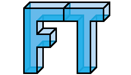

Famous-Trivia 
Contents:
Introduction
Quick Links
Project Layout
Getting Started
1. Pre-requisitesx
2. Installation
3. Documentation
Internals
1. Overview
2. Nidgets
3. Root HTML Pages
4. Game Manager Endpoint
5. Game Description Model
6. Tests
Log
1. Log
Famous-Trivia
»
Welcome to Famous-Trivia’s documentation!
View page source
Welcome to Famous-Trivia’s documentation!
¶
Contents:
Introduction
Quick Links
Project Layout
Getting Started
1. Pre-requisitesx
1.1. Node & NPM
1.2. Express
1.3. NGINX
2. Installation
2.1. Overview
2.2. Details
2.3. Google
3. Documentation
Internals
1. Overview
2. Nidgets
2.1. Processing Nidgets
3. Root HTML Pages
4. Game Manager Endpoint
4.1. launch
4.2. terminate
4.3. join-game
4.4. has-game
4.5. get-game-hash
5. Game Description Model
6. Tests
6.1. Client Side Coverage
6.2. Server Side Coverage
Log
1. Log
Indices and tables
¶
Index
Module Index
Search Page